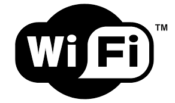
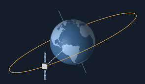
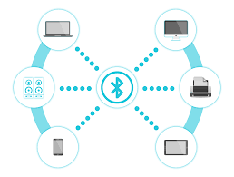

Wired Transmission
Unshielded twister pair (UTP) cable: A Node is any physical or virtual device connected to a network capable of creating, receiving, or transmitting information.
Coaxial Cable: Coaxial cable is a shielded electrical cable used to transmit high-frequency radio signals with minimal interference and low signal loss over long distances.
Copper Wire: Copper wire is a highly conductive, durable material used for transmitting data through electrical signals, commonly in Ethernet and coaxial cables.
Fiber Optic Cable: Fiber optic cable is a high-speed data transmission medium that uses thin strands of glass or plastic to transmit data as pulses of light, offering greater bandwidth and longer transmission distances than traditional copper cables.
Wireless Transmission
WiFi: WiFi is a wireless networking technology that allows devices to connect to the internet or communicate with each other without physical cables, using radio waves to transmit data over short distances.
Cellular Network: Cellular networks use a grid of cell towers to provide wireless connectivity, allowing devices to connect to the internet or communicate with each other over long distances.
Satellite: Satellite communication uses satellites orbiting the Earth to transmit data between devices on the ground, providing global coverage and enabling communication in remote areas where traditional infrastructure is not available.
Bluetooth: Bluetooth is a short-range wireless technology that allows devices to communicate and exchange data over short distances, typically within a range of about 10 meters, using radio waves in the 2.4 GHz frequency band. This is often used to connect accessories to devices wirelessly such as headphones or controllers
Zigbee, Z-Wave and Matter: Zigbee, Z-Wave and Matter are all wireless communication protocols designed for low-power, short-range communication between devices in the Internet of Things (IoT) ecosystem. Zigbee and Z-Wave are established protocols that enable smart home devices to communicate with each other, while Matter is a newer, unified standard developed by the Connectivity Standards Alliance (formerly the Zigbee Alliance) to enhance interoperability among smart home devices across different brands and ecosystems.





